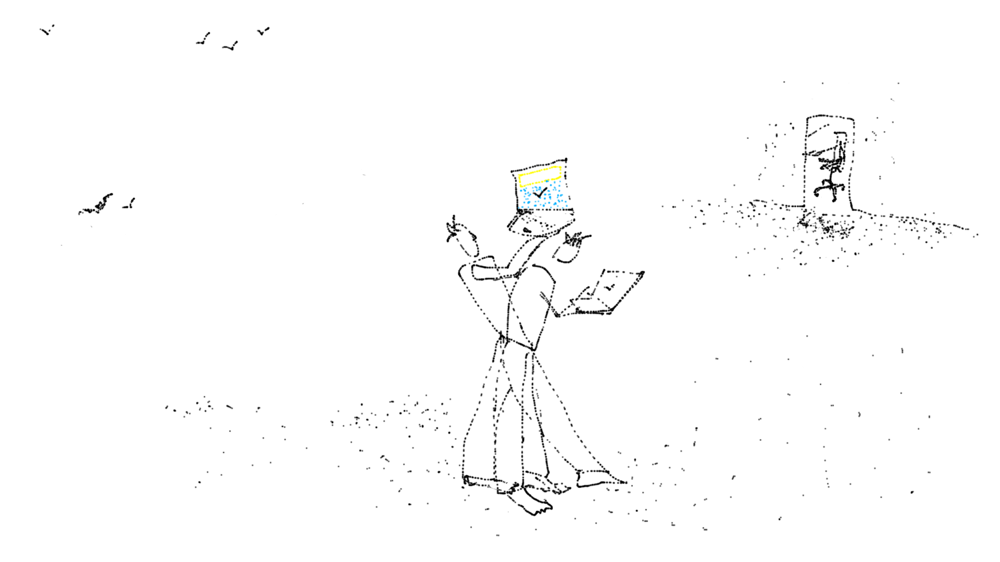

Creation of Birds

This work is a search for a bird in the sky.
As our bodies get constrained to enclosed spaces in this pandemic, "socially" distanced from other bodies, exposed to screens, and algorithmically manipulated by infinite scroll of images juxtaposed with texts - the birds invite us for a performance in the wild. This performance interrogates our relationships with stories, stories generated through texts, the texts that emerge from our relations with the world. This performance is choreographed when a camera (analogous to a machinic eye), the human body, and the bird overlap their sensory perceptions. In other words, only when a camera becomes birdlike, the bird - humanlike, and a human - cameralike, an entaglement is perceived.
>>> Open the eye in search of a bird in the sky <<<
The observer is asked to search for a bird by opening the link (shared above) on their device (equipped with a camera). Once the observer opens the link, the application requests the permission from the observer to access the camera of the device. After gaining access, the camera acts as an eye of the machine and starts detecting objects in its view. Sometimes a chair, sometimes a mug, and oftentimes a bottle in its vicinity. However, when the observer is able to find a bird through the eye of the camera, magic happens! A text of a few lines in generated for the performer reflecting on this performance. Three selected texts are crawled to generate meanings - meanings from the juxtaposition of the words written by Feminist Scholar Donna Haraway on the non-human, texts from Artist Simon Penny on embodied practices, and texts on sensory perceptions from German Biologist Jakob Johann von Uexküll.
Uexküll was from a different school of thought than Darwin. His framework of seeing the world is entirely different from Darwin’s. He talks of not individual agents against each other in a competitive environment but ‘a plan’ where each subjective individual and his experience is a niche that has to be seen for itself. Similarly Simon Penny talks about the impact of mind-body dualism and Cartesianism has had on modern western thought. And how this has created this false hierarchy of the mind as the ‘centre’ and the body as a mere extension. In this work, we extend the ideas of Penny, Uexkull and Haraway by playful juxtapositions of their selected texts by a mechanic agent, read by humans in the moment of performance. We believe that the body IS intelligent, and that we are not individuals separate from our environment but it extends into us. ‘Meaning’ comes not from the cognitive act of ‘interpretation’ but is created in the moment of ‘performance’ of the sensorial and environmental. The painting titled ‘Creation of Birds’ by Remedios Varo poetically shows this ‘becoming’.
[1] A foray into the world of animals and humans Jakob von Uexküll | 1934 |
[2] Haraway | https://www.e-flux.com/journal/75/67125/tentacular-thinking-anthropocene-capitalocene-chthulucene/
[3] Simon Penny Simon Penny - Making Sense_ Cognition, Computing, Art, and Embodiment (2017, The MIT Press)
As our bodies get constrained to enclosed spaces in this pandemic, "socially" distanced from other bodies, exposed to screens, and algorithmically manipulated by infinite scroll of images juxtaposed with texts - the birds invite us for a performance in the wild. This performance interrogates our relationships with stories, stories generated through texts, the texts that emerge from our relations with the world. This performance is choreographed when a camera (analogous to a machinic eye), the human body, and the bird overlap their sensory perceptions. In other words, only when a camera becomes birdlike, the bird - humanlike, and a human - cameralike, an entaglement is perceived.
>>> Open the eye in search of a bird in the sky <<<
The observer is asked to search for a bird by opening the link (shared above) on their device (equipped with a camera). Once the observer opens the link, the application requests the permission from the observer to access the camera of the device. After gaining access, the camera acts as an eye of the machine and starts detecting objects in its view. Sometimes a chair, sometimes a mug, and oftentimes a bottle in its vicinity. However, when the observer is able to find a bird through the eye of the camera, magic happens! A text of a few lines in generated for the performer reflecting on this performance. Three selected texts are crawled to generate meanings - meanings from the juxtaposition of the words written by Feminist Scholar Donna Haraway on the non-human, texts from Artist Simon Penny on embodied practices, and texts on sensory perceptions from German Biologist Jakob Johann von Uexküll.
Uexküll was from a different school of thought than Darwin. His framework of seeing the world is entirely different from Darwin’s. He talks of not individual agents against each other in a competitive environment but ‘a plan’ where each subjective individual and his experience is a niche that has to be seen for itself. Similarly Simon Penny talks about the impact of mind-body dualism and Cartesianism has had on modern western thought. And how this has created this false hierarchy of the mind as the ‘centre’ and the body as a mere extension. In this work, we extend the ideas of Penny, Uexkull and Haraway by playful juxtapositions of their selected texts by a mechanic agent, read by humans in the moment of performance. We believe that the body IS intelligent, and that we are not individuals separate from our environment but it extends into us. ‘Meaning’ comes not from the cognitive act of ‘interpretation’ but is created in the moment of ‘performance’ of the sensorial and environmental. The painting titled ‘Creation of Birds’ by Remedios Varo poetically shows this ‘becoming’.
Remedios Varo, Creation of the Birds, 1957
Ref:[1] A foray into the world of animals and humans Jakob von Uexküll | 1934 |
[2] Haraway | https://www.e-flux.com/journal/75/67125/tentacular-thinking-anthropocene-capitalocene-chthulucene/
[3] Simon Penny Simon Penny - Making Sense_ Cognition, Computing, Art, and Embodiment (2017, The MIT Press)
© NOTAAT 2021